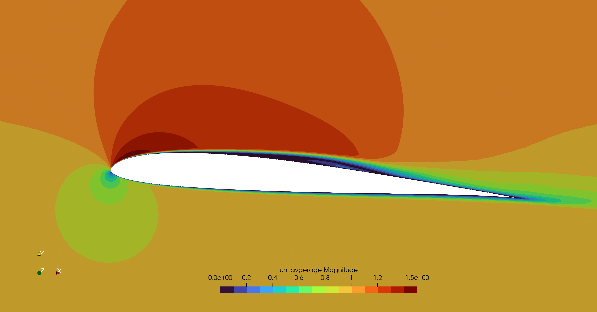

Airfoil

It is one of the most complex and intersting case. The user has to create a proper mesh in gmsh setting the following physical boundaries:
inletfor the inletoutletfor the outletairfoilfor the airfoil wallslimitsfor the top and bottom boundaries
The velocity at the inlet is incresed from 0.0 arriving to the target value u_in at :t_endramp. This increase the numeric stability. If :t_endramp = :t0 the velocity at the inlet will be immediately :u_in. For numeric stability is better to keep u_in = [1.0,0.0,0.0], then fix the Reynolds and so the viscosity will be automatically computed as: ν = 1/Reynolds
The pressure is set 0.0 at the outlet section. The velocity on the limits is set equal to the one at inlet.
Suggested workflow
3D LES are heavy and it is possible to experience divergence issues. It is suggested to use one of the two initilization tecniques: Velocity ramping or Boundary layer initialization. For visualize the results, please refer to
Velocity ramping
By setting t_endramp > t0 automatically the code will create an inlet velocity which will increase linearly in time up to the u_in target value.
using PartitionedArrays
using MPI
using SegregatedVMSSolver
using SegregatedVMSSolver.ParametersDef
using SegregatedVMSSolver.SolverOptionsCalling the dependencies
t0 =0.0
dt = 1e-3
tF = 5e-3
Re = 10
D = 2
rank_partition = (2,2)
airfoil_mesh_file = joinpath(@__DIR__,"..", "assets", "sd7003s_2D_test.msh")timep = TimeParameters(t0,dt,tF)
physicalp = PhysicalParameters(Re=Re)
solverp = SolverParameters(M=2)
exportp = ExportParameters(printinitial=false,printmodel=false,name_tags=["airfoil"], fieldexport=[["uh"]])
meshp= MeshParameters(rank_partition,D,airfoil_mesh_file)
simparams = SimulationParameters(timep,physicalp,solverp,exportp)Setting the parameters. This simulation will not converge, we are not using a suitable solver which needs hypre.
Defining the stabilizatin problem and the simualtion case
sprob = StabilizedProblem(VMS(1))
simcase = Airfoil(meshp,simparams,sprob)Solve in Sequential - on 1 processor not using MPI, useful for debug.
SegregatedVMSSolver.solve(simcase,with_debug)Solve in MPI - for HPC computing
SegregatedVMSSolver.solve(simcase,with_mpi)Then in bash give the command. Check the MPI section for more details
mpiexecjl -n 4 julia --project=. run_mysimulation.jlBoundary Layer initialization
Details are provided in the dedicated section.